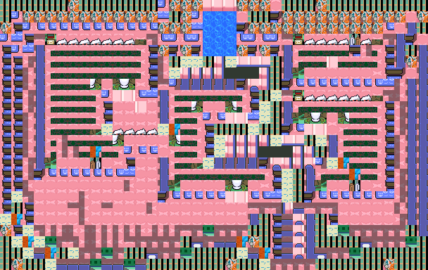
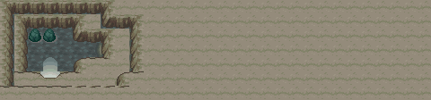
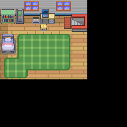
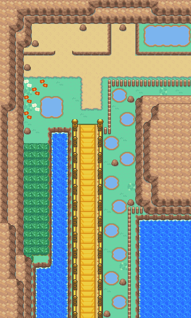
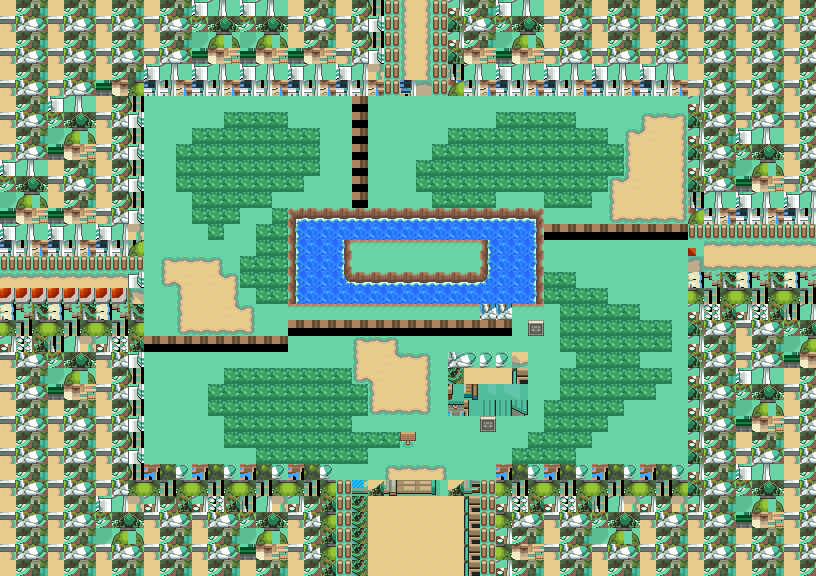

金珠
闪着金色光芒的金珠。
获取：冠军之路(32,20) ／ 火箭队基地(1,3) ／ 阿露福遗迹(11,49) ／ 阿露福遗迹(22,13) ／ 双子岛(5,12) ／ 铃音小道(21,3) ／ 34号道路(12,39) ／ 35号道路(7,20) ／ …等 33 处
用途
闪着金色光芒的金珠。 可在商店内高价售出。
标价 10000 口袋：道具
获取方式
地面隐藏
- 冠军之路（区域132） · (32,20) · 数量 1 · 地图｜静态图
- 火箭队基地（区域133） · (1,3) · 数量 1 · 地图
- 阿露福遗迹（区域134） · (11,49) · 数量 1 · 地图｜静态图
- 阿露福遗迹（区域134） · (22,13) · 数量 1 · 地图｜静态图
- 双子岛（区域139） · (5,12) · 数量 1 · 地图｜静态图
- 铃音小道（区域185） · (21,3) · 数量 1 · 地图｜静态图
- 34号道路（区域159） · (12,39) · 数量 1 · 地图｜静态图
- 35号道路（区域160） · (7,20) · 数量 1 · 地图｜静态图
- 50号水路（区域130） · (34,55) · 数量 1 · 地图｜静态图
- 山吹市（区域98） · (2,1) · 数量 1 · 地图｜静态图
- 满金市（区域147） · (0,0) · 数量 1 · 地图｜静态图
- 擂钵山（区域99） · (42,53) · 数量 1 · 地图｜静态图


人物剧情
- 24号公路（区域124） · (12,15) · 与坐标处人物交互 · 数量 1 · 地图｜静态图 · 触发条件待补
- 铃音小道（区域185） · (23,2) · 与坐标处人物交互 · 数量 1 · 地图｜静态图 · 触发条件待补
- 喇叭芽之塔（区域140） · (6,16) · 与坐标处人物交互 · 数量 1 · 地图｜静态图 · 触发条件待补
- 野生原野区（区域136） · (24,15) · 与坐标处人物交互 · 数量 1 · 地图｜静态图 · 触发条件待补
- 华蓝洞（区域141） · (7,3) · 与坐标处人物交互 · 数量 1 · 地图｜静态图 · 触发条件待补
- 44号道路（区域169） · (17,23) · 与坐标处人物交互 · 数量 1 · 地图｜静态图 · 触发条件待补
- 火箭队基地（区域133） · (23,23) · 与坐标处人物交互 · 数量 1 · 地图｜静态图 · 触发条件待补
- 34号道路（区域159） · (8,48) · 与坐标处人物交互 · 数量 1 · 地图｜静态图 · 触发条件待补
- 满金市（区域147） · (11,17) · 与坐标处人物交互 · 数量 1 · 地图｜静态图 · 触发条件待补
- 39号道路（区域164） · (10,3) · 与坐标处人物交互 · 数量 1 · 地图｜静态图 · 触发条件待补
- 29号道路（区域154） · (14,6) · 与坐标处人物交互 · 数量 2 · 地图｜静态图 · 触发条件待补
- 50号水路（区域130） · (41,31) · 与坐标处人物交互 · 数量 1 · 地图｜静态图 · 触发条件待补
- 31号道路（区域156） · (4,4) · 与坐标处人物交互 · 数量 3 · 地图｜静态图 · 触发条件待补
- 擂钵山（区域99） · (49,19) · 与坐标处人物交互 · 数量 1 · 地图｜静态图 · 触发条件待补
- 48号道路（区域199） · (17,18) · 与坐标处人物交互 · 数量 1 · 地图｜静态图 · 触发条件待补
- 满金市（区域147） · 与坐标处人物交互 · 数量 1 · 地图｜静态图 · 触发条件待补
- 45号道路（区域170） · (7,86) · 与坐标处人物交互 · 数量 1 · 地图｜静态图 · 触发条件待补
- 满金市（区域147） · (14,8) · 与坐标处人物交互 · 数量 1 · 地图｜静态图 · 触发条件待补
- 满金市（区域147） · (14,8) · 与坐标处人物交互 · 数量 1 · 地图｜静态图 · 触发条件待补
- 缘朱市（区域148） · (10,35) · 与坐标处人物交互 · 数量 1 · 地图｜静态图 · 触发条件待补
- 漩涡岛（区域176） · (27,10) · 与坐标处人物交互 · 数量 1 · 地图｜静态图 · 触发条件待补


其它线索
数据来源
- 来源文档：out/items.json（
/110） - 表索引 index 0110；内嵌 itemId 110；口袋 ITEMS (id=1)；type 4；hold_effect 0/0；importance 0；unk19 0
- 获取来源文档：maps_research/out/events/events.json、maps_research/out/scripts/scripts.json
- 获取记录 ID：
hidden:1:40:1、hidden:1:44:0、hidden:1:47:8、hidden:1:54:4、hidden:1:86:0、hidden:2:34:0、hidden:3:88:4、hidden:3:90:3、hidden:3:105:5、hidden:14:1:2、hidden:50:1:2、hidden:55:9:4、script_item_candidate:081686B9:3:43、script_item_candidate:std:08164DA2:2:34、script_item_candidate:std:081BE793:1:92、script_item_candidate:std:081BE7E1:1:63、script_item_candidate:std:081BEA51:1:72、script_item_candidate:std:081BED02:3:64、script_item_candidate:std:087BB036:56:44、script_item_candidate:std:089D5090:3:88、script_item_candidate:std:089EE028:50:5、script_item_candidate:std:089F24CB:3:93、script_item_candidate:std:08ABB0A7:3:79、script_item_candidate:std:08AE0A57:3:105、script_item_candidate:std:08AE63D4:45:5、script_item_candidate:std:08D53837:55:9、script_item_candidate:std:08EC7B32:56:26、script_item_candidate:std:08F339BC:3:75、script_item_candidate:std:08F3E147:3:101、script_item_candidate:std:08F5362B:50:31、script_item_candidate:std:08F53649:50:31、script_item_candidate:std:08F5C135:55:33、script_item_candidate:std:09CD0836:55:15、static_battle_candidate:08AE9EC2:56:14 - 说明文字解码来源：
reference/SAVE_HOME_GAME_DATA.json.charmap
相关支线
任务可能要求携带本条目，或将其作为奖励；具体用途见任务步骤。
地点地图
共享RGB底图；点击可缩放定位。数字对应本页相关地点，不代表地图上全部事件。
冠军之路

1 金珠（32,20）
火箭队基地
该地图的原始图块数据不可解码，保留地点与入口导航。
阿露福遗迹

1 金珠（11,49）
阿露福遗迹

1 金珠（22,13）
双子岛

1 金珠（5,12） 底图有11个图块缺少原始数据。
铃音小道

1 金珠（23,2）；2 金珠（21,3）
展开其余 23 张地点地图
34号道路

1 金珠（12,39）；2 金珠（8,48）
35号道路


1 金珠（7,20）
50号水路

1 金珠（34,55）；2 金珠（41,31）
山吹市

1 金珠（2,1）
满金市

1 金珠（0,0）
擂钵山

1 金珠（49,19）；2 金珠（42,53）
24号公路

1 金珠（12,15）
喇叭芽之塔

1 金珠（6,16）
野生原野区

1 金珠（24,15） 底图有1个图块缺少原始数据。
华蓝洞

1 金珠（7,3）
44号道路

1 金珠（17,23）
火箭队基地

1 金珠（23,23） 底图有5个图块缺少原始数据。
满金市

1 金珠（11,17）
39号道路


1 金珠（10,3）
29号道路


1 金珠（14,6）
31号道路

1 金珠（4,4）
48号道路

1 金珠（17,18）
满金市·住宅区


1 金珠（13,34）
45号道路


1 金珠（7,86）
满金市

1 金珠（14,8）
缘朱市

1 金珠（10,35）
漩涡岛

1 金珠（27,10）
满金市

1 金珠（0,7）